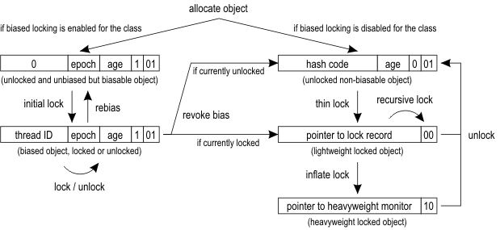
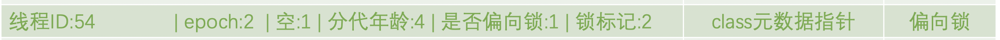
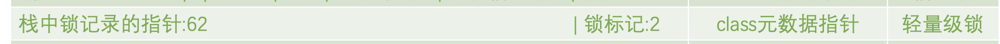

前言
Synchronized的经过优化之后，性能提高很多，接下来我们就看一下它的优化原理。
java对象头
Java的锁状态其实可以分为三种，分别是偏向锁，轻量级锁和重量级锁。
在Java HotSpot VM中，每个对象前面都有一个class指针和一个Mark Word。 Mark Word存储了哈希值以及分代年龄和标记位等，通过这些值的变化，JVM可以实现对java对象的不同程度的锁定。

javaObject对象的对象头大小根据你使用的是32位还是64位的虚拟机的不同，稍有变化。这里我们使用的是64位的虚拟机为例。
Object的对象头，分为两部分，第一部分是Mark Word，用来存储对象的运行时数据比如：hashcode，GC分代年龄，锁状态，持有锁信息，偏向锁的thread ID等等。
在64位的虚拟机中，Mark Word是64bits，如果是在32位的虚拟机中Mark Word是32bits。
第二部分就是Klass Word，Klass Word是一个类型指针，指向class的元数据，JVM通过Klass Word来判断该对象是哪个class的实例。
我们可以看到对象头中的Mark Word根据状态的不同，存储的是不同的内容。
其中锁标记的值分别是：无锁=001，偏向锁=101，轻量级锁=000，重量级锁=010。
java中锁状态的变化
为什么java中的锁有三种状态呢？其本质原因是为了提升锁的效率，因为不同情况下，锁的粒度是不一样的。
通过设置不同的锁的状态，从而可以不同的情况用不同的处理方式。
下图是java中的锁状态的变化图：

上面的图基本上列出了java中锁状态的整个生命周期。接下来我们一个一个的讲解。
偏向锁biased locking
一般来说，一个对象被一个线程获得锁之后，很少发生线程切换的情况。也就是说大部分情况下，一个对象只是被一个线程锁定的。
那么这个时候我们可以通过设置Mark word的一定结构，减少使用CAS来更新对象头的频率。
为了实现这样的目标，我们看下偏向锁的Mark word的结构：

当偏向线程第一次进入同步块的时候，会去判断偏向锁的状态和thread ID，如果偏向锁状态是1，并且thread ID是空的话，将会使用CAS命令来更新对象的Mark word。
设置是否偏向锁=1，锁标记=01,线程ID设置为当前锁定该对象的线程。
下一次该对象进入同步块的时候，会先去判断锁定的线程ID和当前线程ID是否相等，如果相等的话则不需要执行CAS命令，直接进入同步块。
如果这个时候有第二个线程想访问该对象的同步块，因为当前对象头的thread ID是第一个线程的ID，跟第二个线程的ID不同。
如果这个时候线程1的同步块已经执行完毕，那么需要解除偏向锁的锁定。
解除锁定很简单，就是将线程ID设置为空，并且将偏向锁的标志位设为0，
如果这个时候线程1的同步块还在执行，那么需要将偏向锁升级为轻量级锁。
轻量级锁thin lock
先看下轻量级锁的结构：

可以看到Mark word中存放的是栈中锁记录的指针和锁的标记=00。
如果对象现在处于未加锁状态，当一个线程尝试进入同步块的时候，会将把对象头和当前对象的指针拷贝一份，放在线程的栈中一个叫做lock record的地方。
然后JVM通过CAS操作，将对象头中的指针指向刚刚拷贝的lock record。如果成功，则该线程拥有该对象的锁。
实际上Lock Record和Mark word形成了一个互相指向对方的情况。
下次这个线程再次进入同步块的时候，同样执行CAS，比较Mark word中的指针是否和当前thread的lock record地址一致，如果一致表明是同一个线程，可以继续持有该锁。
如果这个时候有第二个线程，也想进入该对象的同步块，也会执行CAS操作，很明显会失败，因为对象头中的指针和lock record的地址不一样。
这个时候第二个线程就会自旋等待。
那么第一个线程什么时候会释放锁呢？
轻量级锁在线程退出同步块的时候，同样需要执行CAS命令，将锁标记从00替换成01，也就是无锁状态。
重量级锁
如果第二个线程自旋时间太久，就会将锁标记替换成10（重量级锁），并且设置重量级锁的指针，指向第二个线程，然后进入阻塞状态。
当第一个线程退出同步块的时候，执行CAS命令就会出错，这时候第一个线程就知道锁已经膨胀成为重量级锁了。
第一个线程就会释放锁，并且唤醒等待的第二个线程。
第二个线程被唤醒之后，重新争夺锁。
我们看下重量级锁的结构：
三种锁状态的不同
偏向锁，轻量级锁和重量级锁到底有什么不同了？
这里总结一下，偏向锁下次进入的时候不需要执行CAS命令，只做线程ID的比较即可。
轻量级锁进入和退出同步块都需要执行CAS命令，但是轻量级锁不会阻塞，它使用的是自旋命令来获取锁。
重量级锁不使用自旋，但是会阻塞线程！

...
...
This is copyright.